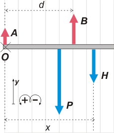

NO ME SALEN
(EJERCICIOS RESUELTOS Y APUNTES TEÓRICOS DE FÍSICA)
Estática
|
|

|
| |
FIS s2.12 - En la figura, la viga uniforme tiene una
longitud l y pesa 112,5 kgf. La viga puede rotar
alrededor del punto fijo B y se apoya en el punto
A. Un hombre que pesa 75 kgf camina a lo largo
de la viga, partiendo de A.
Datos: l = 4 m; d = 2,5 m |
 |
a) Calcular la máxima distancia que el hombre
puede caminar a partir de A manteniendo el
equilibrio.
b) Representar la fuerza que ejerce el apoyo A
como una función de la distancia x. |
|
|
OK, guarda con el precipicio. Mirá el DCL. |
|
|
|  |
Las fuerzas que actúan son tres: los apoyos, A, y B, su peso, P, y la fuerza que le hace el hombre, H, (que es igual al peso del hombre, a menos que se ponga a saltar).
Tomemos el centro de momentos en A, O.
Y planteemos los equilibrios:
ΣF = A + B — P — H = 0
ΣMO = — P l/2 — H . x + B . d = 0
(El peso se plica al centro de la viga, ya que es homogénea). |
|
|
De la segunda despejamos x.
x = (P l/2 — B . d) / H
Pero todavía no podemos calcular porque no conocemos el valor de B. Y si quisiésemos pedirle ayuda a la ecuación de fuerzas no nos la daría, ya que en esa ecuación aparece otra incógnita más que es A... O sea, estamos en problemas... de equilibrio. A menos que...
No te vayas, razoná conmigo: si xM es la distancia máxima que puede caminar el hombre si irse con viga y todoentonces en esa posición el apoya en A deja de hacer fuerza.
(Si todavía no te cierra, pensalo así: a medida que elhombre avanza B hace más fuerza y A menos. ¿Te ayudó esto?).
Ahora sí, podemos ir a la suma de fuerzas recordando que en esa posición A = 0,
B = P + H
Eso lo metemos en la de momentos que quedó esperando:
xM = (P l/2 — (P + H) . d) / H
xM = (112,5 kgf . 2 m — (112,5 kgf + 75 kgf) . 2,5 m) / 75 kgf |
|
|
|
Si no entendiste nuestra jugarreta hasta ahora, entonces vas a caer ahora: volvamos a la ecuación de momentos original.
— P l/2 — H . x + B . d = 0
Si reemplazamos B por su igual sacado de la ecuación de fuerzas:
— P l/2 — H . x + ( P + H — A) . d = 0
Simplemente ahora despejamos A y lo dejamos en función de x.
— P l/2 — H . x + P d + H d — A d = 0
A d = — P l/2 + P d + H d — H . x
A = — P l/2d + P + H — (H/d) . x
A = — 112,5 kgf (4 m / 5 m) + 112,5 kgf + 75 kgf — (75 kgf/2,5 m ) . x |
|
|
| |
A = 97,5 kgf — 30 kgf . x |
|
|
|
|
Y si todavía no te cierra... ¿me decís cuánto vale A en la posición xM = 3,25 m? |
|
|
Desafio: |
|
 |
| |
|
| Algunos derechos reservados.
Se permite su reproducción citando la fuente. Última actualización mar-16. Buenos Aires, Argentina. |
|
|
|